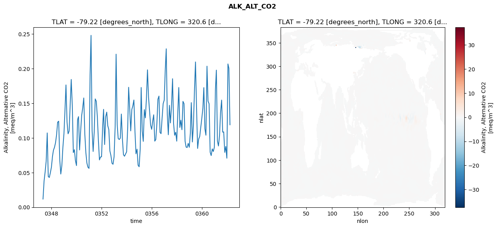
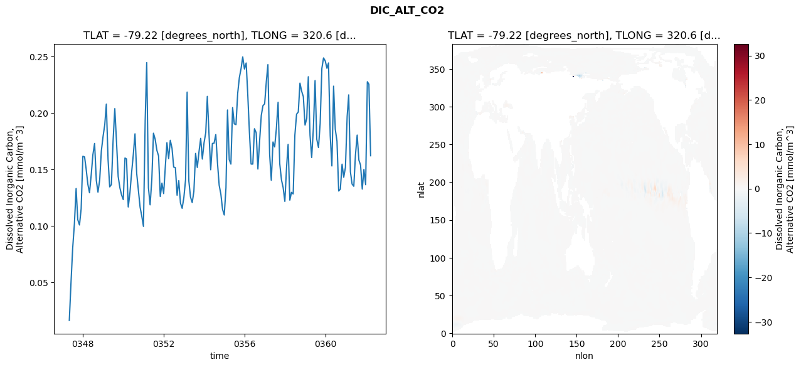
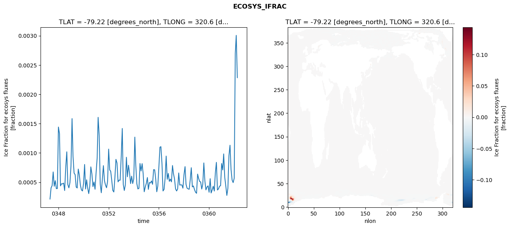
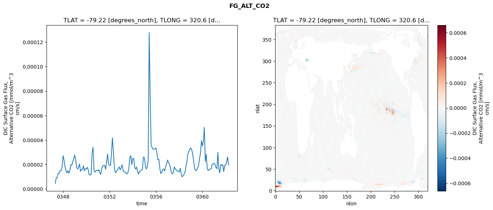

glb-dor_North_Atlantic_basin_003_1999-04-01_00013#
Simulation details#
Case: smyle.cdr-atlas-v0.glb-dor_North_Atlantic_basin_003_1999-04-01_00013.001
Basin: North_Atlantic_basin
Polygon: 3.0
Start date: 1999-04
Show code cell source Hide code cell source
import xarray as xr
import matplotlib.pyplot as plt
Show code cell source Hide code cell source
zarr_store = "/path/to/zarr/store"
# Parameters
zarr_store = "/global/cfs/projectdirs/m4746/Projects/Ocean-CDR-Atlas-v0/data/validation/smyle.cdr-atlas-v0.glb-dor_North_Atlantic_basin_003_1999-04-01_00013.001.validation.zarr"
Show code cell source Hide code cell source
%%time
ds_o = xr.open_zarr(zarr_store).compute()
ds_o
CPU times: user 636 ms, sys: 464 ms, total: 1.1 s
Wall time: 1.36 s
<xarray.Dataset> Size: 2MB
Dimensions: (nlat: 384, nlon: 320, time: 180)
Coordinates:
TLAT float64 8B -79.22
TLONG float64 8B 320.6
ULAT float64 8B -78.95
ULONG float64 8B 321.1
* time (time) object 1kB 0347-05-01 00:00:00 ... 0362-04-01 0...
z_t float32 4B 500.0
Dimensions without coordinates: nlat, nlon
Data variables:
ALK_ALT_CO2_diff (nlat, nlon) float32 492kB nan nan nan ... nan nan nan
ALK_ALT_CO2_rmse (time) float64 1kB 0.0118 0.03778 ... 0.2006 0.119
DIC_ALT_CO2_diff (nlat, nlon) float32 492kB nan nan nan ... nan nan nan
DIC_ALT_CO2_rmse (time) float64 1kB 0.01654 0.05046 ... 0.2256 0.1623
ECOSYS_IFRAC_diff (nlat, nlon) float32 492kB nan nan nan ... nan nan nan
ECOSYS_IFRAC_rmse (time) float64 1kB 0.0002139 0.0004054 ... 0.002284
FG_ALT_CO2_diff (nlat, nlon) float32 492kB nan nan nan ... nan nan nan
FG_ALT_CO2_rmse (time) float64 1kB 4.558e-06 9.187e-06 ... 1.968e-05xarray.Dataset
- nlat: 384
- nlon: 320
- time: 180
- TLAT()float64-79.22
- long_name :
- array of t-grid latitudes
- units :
- degrees_north
array(-79.22052261)
- TLONG()float64320.6
- long_name :
- array of t-grid longitudes
- units :
- degrees_east
array(320.56250892)
- ULAT()float64-78.95
- long_name :
- array of u-grid latitudes
- units :
- degrees_north
array(-78.95289509)
- ULONG()float64321.1
- long_name :
- array of u-grid longitudes
- units :
- degrees_east
array(321.12500894)
- time(time)object0347-05-01 00:00:00 ... 0362-04-...
- bounds :
- time_bound
- long_name :
- time
array([cftime.DatetimeNoLeap(347, 5, 1, 0, 0, 0, 0, has_year_zero=True), cftime.DatetimeNoLeap(347, 6, 1, 0, 0, 0, 0, has_year_zero=True), cftime.DatetimeNoLeap(347, 7, 1, 0, 0, 0, 0, has_year_zero=True), cftime.DatetimeNoLeap(347, 8, 1, 0, 0, 0, 0, has_year_zero=True), cftime.DatetimeNoLeap(347, 9, 1, 0, 0, 0, 0, has_year_zero=True), cftime.DatetimeNoLeap(347, 10, 1, 0, 0, 0, 0, has_year_zero=True), cftime.DatetimeNoLeap(347, 11, 1, 0, 0, 0, 0, has_year_zero=True), cftime.DatetimeNoLeap(347, 12, 1, 0, 0, 0, 0, has_year_zero=True), cftime.DatetimeNoLeap(348, 1, 1, 0, 0, 0, 0, has_year_zero=True), cftime.DatetimeNoLeap(348, 2, 1, 0, 0, 0, 0, has_year_zero=True), cftime.DatetimeNoLeap(348, 3, 1, 0, 0, 0, 0, has_year_zero=True), cftime.DatetimeNoLeap(348, 4, 1, 0, 0, 0, 0, has_year_zero=True), cftime.DatetimeNoLeap(348, 5, 1, 0, 0, 0, 0, has_year_zero=True), cftime.DatetimeNoLeap(348, 6, 1, 0, 0, 0, 0, has_year_zero=True), cftime.DatetimeNoLeap(348, 7, 1, 0, 0, 0, 0, has_year_zero=True), cftime.DatetimeNoLeap(348, 8, 1, 0, 0, 0, 0, has_year_zero=True), cftime.DatetimeNoLeap(348, 9, 1, 0, 0, 0, 0, has_year_zero=True), cftime.DatetimeNoLeap(348, 10, 1, 0, 0, 0, 0, has_year_zero=True), cftime.DatetimeNoLeap(348, 11, 1, 0, 0, 0, 0, has_year_zero=True), cftime.DatetimeNoLeap(348, 12, 1, 0, 0, 0, 0, has_year_zero=True), cftime.DatetimeNoLeap(349, 1, 1, 0, 0, 0, 0, has_year_zero=True), cftime.DatetimeNoLeap(349, 2, 1, 0, 0, 0, 0, has_year_zero=True), cftime.DatetimeNoLeap(349, 3, 1, 0, 0, 0, 0, has_year_zero=True), cftime.DatetimeNoLeap(349, 4, 1, 0, 0, 0, 0, has_year_zero=True), cftime.DatetimeNoLeap(349, 5, 1, 0, 0, 0, 0, has_year_zero=True), cftime.DatetimeNoLeap(349, 6, 1, 0, 0, 0, 0, has_year_zero=True), cftime.DatetimeNoLeap(349, 7, 1, 0, 0, 0, 0, has_year_zero=True), cftime.DatetimeNoLeap(349, 8, 1, 0, 0, 0, 0, has_year_zero=True), cftime.DatetimeNoLeap(349, 9, 1, 0, 0, 0, 0, has_year_zero=True), cftime.DatetimeNoLeap(349, 10, 1, 0, 0, 0, 0, has_year_zero=True), cftime.DatetimeNoLeap(349, 11, 1, 0, 0, 0, 0, has_year_zero=True), cftime.DatetimeNoLeap(349, 12, 1, 0, 0, 0, 0, has_year_zero=True), cftime.DatetimeNoLeap(350, 1, 1, 0, 0, 0, 0, has_year_zero=True), cftime.DatetimeNoLeap(350, 2, 1, 0, 0, 0, 0, has_year_zero=True), cftime.DatetimeNoLeap(350, 3, 1, 0, 0, 0, 0, has_year_zero=True), cftime.DatetimeNoLeap(350, 4, 1, 0, 0, 0, 0, has_year_zero=True), cftime.DatetimeNoLeap(350, 5, 1, 0, 0, 0, 0, has_year_zero=True), cftime.DatetimeNoLeap(350, 6, 1, 0, 0, 0, 0, has_year_zero=True), cftime.DatetimeNoLeap(350, 7, 1, 0, 0, 0, 0, has_year_zero=True), cftime.DatetimeNoLeap(350, 8, 1, 0, 0, 0, 0, has_year_zero=True), cftime.DatetimeNoLeap(350, 9, 1, 0, 0, 0, 0, has_year_zero=True), cftime.DatetimeNoLeap(350, 10, 1, 0, 0, 0, 0, has_year_zero=True), cftime.DatetimeNoLeap(350, 11, 1, 0, 0, 0, 0, has_year_zero=True), cftime.DatetimeNoLeap(350, 12, 1, 0, 0, 0, 0, has_year_zero=True), cftime.DatetimeNoLeap(351, 1, 1, 0, 0, 0, 0, has_year_zero=True), cftime.DatetimeNoLeap(351, 2, 1, 0, 0, 0, 0, has_year_zero=True), cftime.DatetimeNoLeap(351, 3, 1, 0, 0, 0, 0, has_year_zero=True), cftime.DatetimeNoLeap(351, 4, 1, 0, 0, 0, 0, has_year_zero=True), cftime.DatetimeNoLeap(351, 5, 1, 0, 0, 0, 0, has_year_zero=True), cftime.DatetimeNoLeap(351, 6, 1, 0, 0, 0, 0, has_year_zero=True), cftime.DatetimeNoLeap(351, 7, 1, 0, 0, 0, 0, has_year_zero=True), cftime.DatetimeNoLeap(351, 8, 1, 0, 0, 0, 0, has_year_zero=True), cftime.DatetimeNoLeap(351, 9, 1, 0, 0, 0, 0, has_year_zero=True), cftime.DatetimeNoLeap(351, 10, 1, 0, 0, 0, 0, has_year_zero=True), cftime.DatetimeNoLeap(351, 11, 1, 0, 0, 0, 0, has_year_zero=True), cftime.DatetimeNoLeap(351, 12, 1, 0, 0, 0, 0, has_year_zero=True), cftime.DatetimeNoLeap(352, 1, 1, 0, 0, 0, 0, has_year_zero=True), cftime.DatetimeNoLeap(352, 2, 1, 0, 0, 0, 0, has_year_zero=True), cftime.DatetimeNoLeap(352, 3, 1, 0, 0, 0, 0, has_year_zero=True), cftime.DatetimeNoLeap(352, 4, 1, 0, 0, 0, 0, has_year_zero=True), cftime.DatetimeNoLeap(352, 5, 1, 0, 0, 0, 0, has_year_zero=True), cftime.DatetimeNoLeap(352, 6, 1, 0, 0, 0, 0, has_year_zero=True), cftime.DatetimeNoLeap(352, 7, 1, 0, 0, 0, 0, has_year_zero=True), cftime.DatetimeNoLeap(352, 8, 1, 0, 0, 0, 0, has_year_zero=True), cftime.DatetimeNoLeap(352, 9, 1, 0, 0, 0, 0, has_year_zero=True), cftime.DatetimeNoLeap(352, 10, 1, 0, 0, 0, 0, has_year_zero=True), cftime.DatetimeNoLeap(352, 11, 1, 0, 0, 0, 0, has_year_zero=True), cftime.DatetimeNoLeap(352, 12, 1, 0, 0, 0, 0, has_year_zero=True), cftime.DatetimeNoLeap(353, 1, 1, 0, 0, 0, 0, has_year_zero=True), cftime.DatetimeNoLeap(353, 2, 1, 0, 0, 0, 0, has_year_zero=True), cftime.DatetimeNoLeap(353, 3, 1, 0, 0, 0, 0, has_year_zero=True), cftime.DatetimeNoLeap(353, 4, 1, 0, 0, 0, 0, has_year_zero=True), cftime.DatetimeNoLeap(353, 5, 1, 0, 0, 0, 0, has_year_zero=True), cftime.DatetimeNoLeap(353, 6, 1, 0, 0, 0, 0, has_year_zero=True), cftime.DatetimeNoLeap(353, 7, 1, 0, 0, 0, 0, has_year_zero=True), cftime.DatetimeNoLeap(353, 8, 1, 0, 0, 0, 0, has_year_zero=True), cftime.DatetimeNoLeap(353, 9, 1, 0, 0, 0, 0, has_year_zero=True), cftime.DatetimeNoLeap(353, 10, 1, 0, 0, 0, 0, has_year_zero=True), cftime.DatetimeNoLeap(353, 11, 1, 0, 0, 0, 0, has_year_zero=True), cftime.DatetimeNoLeap(353, 12, 1, 0, 0, 0, 0, has_year_zero=True), cftime.DatetimeNoLeap(354, 1, 1, 0, 0, 0, 0, has_year_zero=True), cftime.DatetimeNoLeap(354, 2, 1, 0, 0, 0, 0, has_year_zero=True), cftime.DatetimeNoLeap(354, 3, 1, 0, 0, 0, 0, has_year_zero=True), cftime.DatetimeNoLeap(354, 4, 1, 0, 0, 0, 0, has_year_zero=True), cftime.DatetimeNoLeap(354, 5, 1, 0, 0, 0, 0, has_year_zero=True), cftime.DatetimeNoLeap(354, 6, 1, 0, 0, 0, 0, has_year_zero=True), cftime.DatetimeNoLeap(354, 7, 1, 0, 0, 0, 0, has_year_zero=True), cftime.DatetimeNoLeap(354, 8, 1, 0, 0, 0, 0, has_year_zero=True), cftime.DatetimeNoLeap(354, 9, 1, 0, 0, 0, 0, has_year_zero=True), cftime.DatetimeNoLeap(354, 10, 1, 0, 0, 0, 0, has_year_zero=True), cftime.DatetimeNoLeap(354, 11, 1, 0, 0, 0, 0, has_year_zero=True), cftime.DatetimeNoLeap(354, 12, 1, 0, 0, 0, 0, has_year_zero=True), cftime.DatetimeNoLeap(355, 1, 1, 0, 0, 0, 0, has_year_zero=True), cftime.DatetimeNoLeap(355, 2, 1, 0, 0, 0, 0, has_year_zero=True), cftime.DatetimeNoLeap(355, 3, 1, 0, 0, 0, 0, has_year_zero=True), cftime.DatetimeNoLeap(355, 4, 1, 0, 0, 0, 0, has_year_zero=True), cftime.DatetimeNoLeap(355, 5, 1, 0, 0, 0, 0, has_year_zero=True), cftime.DatetimeNoLeap(355, 6, 1, 0, 0, 0, 0, has_year_zero=True), cftime.DatetimeNoLeap(355, 7, 1, 0, 0, 0, 0, has_year_zero=True), cftime.DatetimeNoLeap(355, 8, 1, 0, 0, 0, 0, has_year_zero=True), cftime.DatetimeNoLeap(355, 9, 1, 0, 0, 0, 0, has_year_zero=True), cftime.DatetimeNoLeap(355, 10, 1, 0, 0, 0, 0, has_year_zero=True), cftime.DatetimeNoLeap(355, 11, 1, 0, 0, 0, 0, has_year_zero=True), cftime.DatetimeNoLeap(355, 12, 1, 0, 0, 0, 0, has_year_zero=True), cftime.DatetimeNoLeap(356, 1, 1, 0, 0, 0, 0, has_year_zero=True), cftime.DatetimeNoLeap(356, 2, 1, 0, 0, 0, 0, has_year_zero=True), cftime.DatetimeNoLeap(356, 3, 1, 0, 0, 0, 0, has_year_zero=True), cftime.DatetimeNoLeap(356, 4, 1, 0, 0, 0, 0, has_year_zero=True), cftime.DatetimeNoLeap(356, 5, 1, 0, 0, 0, 0, has_year_zero=True), cftime.DatetimeNoLeap(356, 6, 1, 0, 0, 0, 0, has_year_zero=True), cftime.DatetimeNoLeap(356, 7, 1, 0, 0, 0, 0, has_year_zero=True), cftime.DatetimeNoLeap(356, 8, 1, 0, 0, 0, 0, has_year_zero=True), cftime.DatetimeNoLeap(356, 9, 1, 0, 0, 0, 0, has_year_zero=True), cftime.DatetimeNoLeap(356, 10, 1, 0, 0, 0, 0, has_year_zero=True), cftime.DatetimeNoLeap(356, 11, 1, 0, 0, 0, 0, has_year_zero=True), cftime.DatetimeNoLeap(356, 12, 1, 0, 0, 0, 0, has_year_zero=True), cftime.DatetimeNoLeap(357, 1, 1, 0, 0, 0, 0, has_year_zero=True), cftime.DatetimeNoLeap(357, 2, 1, 0, 0, 0, 0, has_year_zero=True), cftime.DatetimeNoLeap(357, 3, 1, 0, 0, 0, 0, has_year_zero=True), cftime.DatetimeNoLeap(357, 4, 1, 0, 0, 0, 0, has_year_zero=True), cftime.DatetimeNoLeap(357, 5, 1, 0, 0, 0, 0, has_year_zero=True), cftime.DatetimeNoLeap(357, 6, 1, 0, 0, 0, 0, has_year_zero=True), cftime.DatetimeNoLeap(357, 7, 1, 0, 0, 0, 0, has_year_zero=True), cftime.DatetimeNoLeap(357, 8, 1, 0, 0, 0, 0, has_year_zero=True), cftime.DatetimeNoLeap(357, 9, 1, 0, 0, 0, 0, has_year_zero=True), cftime.DatetimeNoLeap(357, 10, 1, 0, 0, 0, 0, has_year_zero=True), cftime.DatetimeNoLeap(357, 11, 1, 0, 0, 0, 0, has_year_zero=True), cftime.DatetimeNoLeap(357, 12, 1, 0, 0, 0, 0, has_year_zero=True), cftime.DatetimeNoLeap(358, 1, 1, 0, 0, 0, 0, has_year_zero=True), cftime.DatetimeNoLeap(358, 2, 1, 0, 0, 0, 0, has_year_zero=True), cftime.DatetimeNoLeap(358, 3, 1, 0, 0, 0, 0, has_year_zero=True), cftime.DatetimeNoLeap(358, 4, 1, 0, 0, 0, 0, has_year_zero=True), cftime.DatetimeNoLeap(358, 5, 1, 0, 0, 0, 0, has_year_zero=True), cftime.DatetimeNoLeap(358, 6, 1, 0, 0, 0, 0, has_year_zero=True), cftime.DatetimeNoLeap(358, 7, 1, 0, 0, 0, 0, has_year_zero=True), cftime.DatetimeNoLeap(358, 8, 1, 0, 0, 0, 0, has_year_zero=True), cftime.DatetimeNoLeap(358, 9, 1, 0, 0, 0, 0, has_year_zero=True), cftime.DatetimeNoLeap(358, 10, 1, 0, 0, 0, 0, has_year_zero=True), cftime.DatetimeNoLeap(358, 11, 1, 0, 0, 0, 0, has_year_zero=True), cftime.DatetimeNoLeap(358, 12, 1, 0, 0, 0, 0, has_year_zero=True), cftime.DatetimeNoLeap(359, 1, 1, 0, 0, 0, 0, has_year_zero=True), cftime.DatetimeNoLeap(359, 2, 1, 0, 0, 0, 0, has_year_zero=True), cftime.DatetimeNoLeap(359, 3, 1, 0, 0, 0, 0, has_year_zero=True), cftime.DatetimeNoLeap(359, 4, 1, 0, 0, 0, 0, has_year_zero=True), cftime.DatetimeNoLeap(359, 5, 1, 0, 0, 0, 0, has_year_zero=True), cftime.DatetimeNoLeap(359, 6, 1, 0, 0, 0, 0, has_year_zero=True), cftime.DatetimeNoLeap(359, 7, 1, 0, 0, 0, 0, has_year_zero=True), cftime.DatetimeNoLeap(359, 8, 1, 0, 0, 0, 0, has_year_zero=True), cftime.DatetimeNoLeap(359, 9, 1, 0, 0, 0, 0, has_year_zero=True), cftime.DatetimeNoLeap(359, 10, 1, 0, 0, 0, 0, has_year_zero=True), cftime.DatetimeNoLeap(359, 11, 1, 0, 0, 0, 0, has_year_zero=True), cftime.DatetimeNoLeap(359, 12, 1, 0, 0, 0, 0, has_year_zero=True), cftime.DatetimeNoLeap(360, 1, 1, 0, 0, 0, 0, has_year_zero=True), cftime.DatetimeNoLeap(360, 2, 1, 0, 0, 0, 0, has_year_zero=True), cftime.DatetimeNoLeap(360, 3, 1, 0, 0, 0, 0, has_year_zero=True), cftime.DatetimeNoLeap(360, 4, 1, 0, 0, 0, 0, has_year_zero=True), cftime.DatetimeNoLeap(360, 5, 1, 0, 0, 0, 0, has_year_zero=True), cftime.DatetimeNoLeap(360, 6, 1, 0, 0, 0, 0, has_year_zero=True), cftime.DatetimeNoLeap(360, 7, 1, 0, 0, 0, 0, has_year_zero=True), cftime.DatetimeNoLeap(360, 8, 1, 0, 0, 0, 0, has_year_zero=True), cftime.DatetimeNoLeap(360, 9, 1, 0, 0, 0, 0, has_year_zero=True), cftime.DatetimeNoLeap(360, 10, 1, 0, 0, 0, 0, has_year_zero=True), cftime.DatetimeNoLeap(360, 11, 1, 0, 0, 0, 0, has_year_zero=True), cftime.DatetimeNoLeap(360, 12, 1, 0, 0, 0, 0, has_year_zero=True), cftime.DatetimeNoLeap(361, 1, 1, 0, 0, 0, 0, has_year_zero=True), cftime.DatetimeNoLeap(361, 2, 1, 0, 0, 0, 0, has_year_zero=True), cftime.DatetimeNoLeap(361, 3, 1, 0, 0, 0, 0, has_year_zero=True), cftime.DatetimeNoLeap(361, 4, 1, 0, 0, 0, 0, has_year_zero=True), cftime.DatetimeNoLeap(361, 5, 1, 0, 0, 0, 0, has_year_zero=True), cftime.DatetimeNoLeap(361, 6, 1, 0, 0, 0, 0, has_year_zero=True), cftime.DatetimeNoLeap(361, 7, 1, 0, 0, 0, 0, has_year_zero=True), cftime.DatetimeNoLeap(361, 8, 1, 0, 0, 0, 0, has_year_zero=True), cftime.DatetimeNoLeap(361, 9, 1, 0, 0, 0, 0, has_year_zero=True), cftime.DatetimeNoLeap(361, 10, 1, 0, 0, 0, 0, has_year_zero=True), cftime.DatetimeNoLeap(361, 11, 1, 0, 0, 0, 0, has_year_zero=True), cftime.DatetimeNoLeap(361, 12, 1, 0, 0, 0, 0, has_year_zero=True), cftime.DatetimeNoLeap(362, 1, 1, 0, 0, 0, 0, has_year_zero=True), cftime.DatetimeNoLeap(362, 2, 1, 0, 0, 0, 0, has_year_zero=True), cftime.DatetimeNoLeap(362, 3, 1, 0, 0, 0, 0, has_year_zero=True), cftime.DatetimeNoLeap(362, 4, 1, 0, 0, 0, 0, has_year_zero=True)], dtype=object) - z_t()float32500.0
- long_name :
- depth from surface to midpoint of layer
- positive :
- down
- units :
- centimeters
- valid_max :
- 537500.0
- valid_min :
- 500.0
array(500., dtype=float32)
- ALK_ALT_CO2_diff(nlat, nlon)float32nan nan nan nan ... nan nan nan nan
- cell_methods :
- time: mean
- grid_loc :
- 3111
- long_name :
- Alkalinity, Alternative CO2
- units :
- meq/m^3
array([[ nan, nan, nan, ..., nan, nan, nan], [ nan, nan, nan, ..., nan, nan, nan], [0.04931641, 0.05541992, 0.0625 , ..., nan, nan, nan], ..., [ nan, nan, nan, ..., nan, nan, nan], [ nan, nan, nan, ..., nan, nan, nan], [ nan, nan, nan, ..., nan, nan, nan]], dtype=float32) - ALK_ALT_CO2_rmse(time)float640.0118 0.03778 ... 0.2006 0.119
- cell_methods :
- time: mean
- grid_loc :
- 3111
- long_name :
- Alkalinity, Alternative CO2
- units :
- meq/m^3
array([0.01179758, 0.03778489, 0.05059411, 0.0662646 , 0.10725489, 0.04428335, 0.04297705, 0.04975671, 0.05782942, 0.07336531, 0.08230298, 0.0865379 , 0.09322567, 0.10492035, 0.12278619, 0.12420109, 0.06840932, 0.04792286, 0.06031276, 0.08634496, 0.10609484, 0.14160657, 0.17655599, 0.12295148, 0.10598059, 0.10988245, 0.14737984, 0.18447568, 0.14678994, 0.07885294, 0.08304794, 0.06742663, 0.06011835, 0.12635603, 0.13080325, 0.08269874, 0.10885366, 0.13246679, 0.14341712, 0.1577404 , 0.10532609, 0.07879731, 0.06361281, 0.05772201, 0.05610329, 0.19098961, 0.24814638, 0.11049142, 0.08048816, 0.10840766, 0.15640949, 0.15293882, 0.13016692, 0.09653127, 0.06827263, 0.07251126, 0.07280028, 0.11553487, 0.14130723, 0.090512 , 0.130459 , 0.13731905, 0.11772171, 0.1119401 , 0.08116138, 0.0746554 , 0.06346315, 0.06202436, 0.07294869, 0.11593865, 0.22097918, 0.11961094, 0.09920705, 0.09775924, 0.09977106, 0.13453372, 0.09827623, 0.07582115, 0.07365536, 0.07671385, 0.07999001, 0.11391246, 0.17318769, 0.14220636, 0.11024637, 0.14104574, 0.14624251, 0.15478999, 0.10972679, 0.07715467, 0.08383153, 0.06067644, 0.0584334 , 0.08447056, 0.17290349, 0.11021444, 0.09509553, 0.14094015, 0.12898396, 0.15706522, 0.19835184, 0.15920177, 0.13828707, 0.11853298, 0.11243855, 0.12478124, 0.13346393, 0.09540605, 0.09771089, 0.12019327, 0.15582837, 0.16048485, 0.10791189, 0.10625888, 0.12891572, 0.14951591, 0.15454458, 0.19910258, 0.22874191, 0.13343255, 0.10462032, 0.14714404, 0.12170882, 0.14529637, 0.18552396, 0.1206955 , 0.10387316, 0.10829182, 0.09540081, 0.1371124 , 0.17287221, 0.11520277, 0.12562121, 0.11188684, 0.1528219 , 0.1495657 , 0.09535173, 0.08682175, 0.08623589, 0.09221493, 0.08652583, 0.10696447, 0.15102465, 0.09418198, 0.11747691, 0.16839925, 0.20975543, 0.14259884, 0.08487294, 0.09830807, 0.10217234, 0.11502101, 0.12837166, 0.14299398, 0.17267657, 0.11326614, 0.10399279, 0.20365493, 0.15325396, 0.1493221 , 0.07951375, 0.07456472, 0.08426801, 0.08040717, 0.08643847, 0.16957389, 0.19794441, 0.09560537, 0.08843554, 0.10319399, 0.13668646, 0.15472511, 0.10839826, 0.1087775 , 0.07918952, 0.08772394, 0.07078367, 0.20686154, 0.20059131, 0.11901194]) - DIC_ALT_CO2_diff(nlat, nlon)float32nan nan nan nan ... nan nan nan nan
- cell_methods :
- time: mean
- grid_loc :
- 3111
- long_name :
- Dissolved Inorganic Carbon, Alternative CO2
- units :
- mmol/m^3
array([[ nan, nan, nan, ..., nan, nan, nan], [ nan, nan, nan, ..., nan, nan, nan], [0.08789062, 0.09716797, 0.11474609, ..., nan, nan, nan], ..., [ nan, nan, nan, ..., nan, nan, nan], [ nan, nan, nan, ..., nan, nan, nan], [ nan, nan, nan, ..., nan, nan, nan]], dtype=float32) - DIC_ALT_CO2_rmse(time)float640.01654 0.05046 ... 0.2256 0.1623
- cell_methods :
- time: mean
- grid_loc :
- 3111
- long_name :
- Dissolved Inorganic Carbon, Alternative CO2
- units :
- mmol/m^3
array([0.01654498, 0.05046479, 0.08054467, 0.10192847, 0.1332869 , 0.10570105, 0.10104147, 0.11533099, 0.16184249, 0.16129435, 0.15069653, 0.13714089, 0.12959654, 0.14550349, 0.16314275, 0.17317152, 0.14043421, 0.13010158, 0.14089056, 0.16661761, 0.17941301, 0.18992429, 0.20799363, 0.15922787, 0.13476815, 0.13681066, 0.17546457, 0.20404833, 0.1748342 , 0.14401578, 0.13395351, 0.1276788 , 0.12350619, 0.16031048, 0.15945624, 0.11697419, 0.12925549, 0.14750815, 0.16305822, 0.18172332, 0.14654765, 0.13170985, 0.11683892, 0.10908011, 0.09976811, 0.19334066, 0.24476045, 0.13394031, 0.11888796, 0.14131195, 0.18224596, 0.17687867, 0.16703493, 0.16221571, 0.12626937, 0.13802685, 0.12883052, 0.15339354, 0.17390379, 0.15974896, 0.17597634, 0.16898426, 0.15232088, 0.15179917, 0.12734864, 0.14027972, 0.12039222, 0.11579561, 0.12532545, 0.14105402, 0.21865057, 0.13999787, 0.1258079 , 0.12086523, 0.13077397, 0.16435898, 0.1519601 , 0.16566587, 0.17769541, 0.15938915, 0.17386761, 0.18282658, 0.21487098, 0.18071281, 0.1499252 , 0.17319681, 0.17346109, 0.18105004, 0.1557824 , 0.13628349, 0.12823586, 0.1149164 , 0.10987285, 0.13400004, 0.20282623, 0.15892607, 0.15491995, 0.20497063, 0.19058253, 0.18988639, 0.21766518, 0.23152242, 0.23955518, 0.24982232, 0.23909844, 0.2444221 , 0.21752323, 0.18285369, 0.15499187, 0.1549443 , 0.18625765, 0.1827245 , 0.15055015, 0.17470814, 0.19794813, 0.20663097, 0.20830972, 0.22848837, 0.24299189, 0.16374555, 0.14061278, 0.17453957, 0.17014998, 0.18644197, 0.20965952, 0.1551292 , 0.14095975, 0.13417495, 0.12192406, 0.15195713, 0.17237723, 0.12304048, 0.12991448, 0.12849703, 0.18055677, 0.19909891, 0.20108537, 0.22661455, 0.21940134, 0.21466958, 0.1894661 , 0.19543895, 0.23227015, 0.18054708, 0.16074726, 0.18702839, 0.2288456 , 0.17693319, 0.16961709, 0.19083872, 0.2396897 , 0.24892097, 0.24629335, 0.23972686, 0.2444706 , 0.18008575, 0.15330768, 0.22391972, 0.18586983, 0.17527547, 0.13110675, 0.13278291, 0.15485995, 0.1432776 , 0.15202065, 0.19715226, 0.21618841, 0.14802354, 0.13724013, 0.13531317, 0.16310828, 0.18059248, 0.15842288, 0.15409733, 0.13279965, 0.1502483 , 0.13670496, 0.22786545, 0.22561437, 0.16233366]) - ECOSYS_IFRAC_diff(nlat, nlon)float32nan nan nan nan ... nan nan nan nan
- cell_methods :
- time: mean
- grid_loc :
- 2110
- long_name :
- Ice Fraction for ecosys fluxes
- units :
- fraction
array([[ nan, nan, nan, ..., nan, nan, nan], [ nan, nan, nan, ..., nan, nan, nan], [-0.0008871 , -0.00263476, -0.00316066, ..., nan, nan, nan], ..., [ nan, nan, nan, ..., nan, nan, nan], [ nan, nan, nan, ..., nan, nan, nan], [ nan, nan, nan, ..., nan, nan, nan]], dtype=float32) - ECOSYS_IFRAC_rmse(time)float640.0002139 0.0004054 ... 0.002284
- cell_methods :
- time: mean
- grid_loc :
- 2110
- long_name :
- Ice Fraction for ecosys fluxes
- units :
- fraction
array([0.00021392, 0.00040542, 0.00044241, 0.00067649, 0.00043199, 0.00052772, 0.00039097, 0.00039365, 0.0014421 , 0.0013267 , 0.00043769, 0.000475 , 0.00047244, 0.00048587, 0.00035918, 0.00075476, 0.00101977, 0.00046133, 0.00040495, 0.00049206, 0.00077851, 0.00158613, 0.00094416, 0.0006562 , 0.00063133, 0.00041908, 0.0004027 , 0.00072548, 0.0006223 , 0.00045123, 0.00036956, 0.00035199, 0.00047837, 0.00080375, 0.0003853 , 0.00054239, 0.00040269, 0.00030666, 0.00043155, 0.00076288, 0.00064376, 0.00042621, 0.00050506, 0.00038112, 0.00066236, 0.00091604, 0.00160781, 0.00129428, 0.00046886, 0.00032138, 0.00055184, 0.00078382, 0.00052675, 0.0004524 , 0.00040663, 0.00051627, 0.00106604, 0.00070901, 0.00069015, 0.0005326 , 0.00036117, 0.00033459, 0.00057426, 0.00089111, 0.0008282 , 0.00050709, 0.00053756, 0.00053482, 0.00093488, 0.00141803, 0.00046624, 0.00035984, 0.00045482, 0.00092675, 0.00059404, 0.00079102, 0.00065339, 0.00047761, 0.00060507, 0.00047848, 0.00055978, 0.00127034, 0.00078699, 0.00047492, 0.00038634, 0.0003978 , 0.00082057, 0.00069221, 0.00081848, 0.00064758, 0.0003382 , 0.00041741, 0.00048257, 0.00058121, 0.00037884, 0.00049609, 0.000487 , 0.00052312, 0.00046483, 0.00071566, 0.00071249, 0.00055442, 0.00033839, 0.00043765, 0.00076099, 0.00109915, 0.00110706, 0.00082095, 0.00035168, 0.0003785 , 0.00056515, 0.00094705, 0.0005509 , 0.0006512 , 0.00051533, 0.00055406, 0.0005071 , 0.00078618, 0.00064756, 0.00055602, 0.00038675, 0.00035173, 0.0003878 , 0.00065927, 0.00045204, 0.00045655, 0.00045399, 0.00039946, 0.00062915, 0.00076742, 0.00046665, 0.00039904, 0.00038794, 0.00038088, 0.00053979, 0.00074864, 0.00042073, 0.00043792, 0.00037864, 0.0003325 , 0.00031209, 0.00063966, 0.0005686 , 0.00051345, 0.00050589, 0.00038446, 0.00046668, 0.00083014, 0.00051799, 0.00036997, 0.00041918, 0.00043885, 0.00032975, 0.00056171, 0.00031736, 0.00037079, 0.00043265, 0.00035037, 0.00065589, 0.00084011, 0.00036821, 0.00038735, 0.00043332, 0.00044168, 0.0008207 , 0.00071018, 0.00098393, 0.00058387, 0.00043906, 0.00027614, 0.0003962 , 0.00095506, 0.00113215, 0.00071672, 0.00053786, 0.00049438, 0.00056932, 0.00269646, 0.00300579, 0.00228389]) - FG_ALT_CO2_diff(nlat, nlon)float32nan nan nan nan ... nan nan nan nan
- cell_methods :
- time: mean
- grid_loc :
- 2110
- long_name :
- DIC Surface Gas Flux, Alternative CO2
- units :
- mmol/m^3 cm/s
array([[ nan, nan, nan, ..., nan, nan, nan], [ nan, nan, nan, ..., nan, nan, nan], [4.7680369e-06, 9.1564725e-06, 1.5033875e-05, ..., nan, nan, nan], ..., [ nan, nan, nan, ..., nan, nan, nan], [ nan, nan, nan, ..., nan, nan, nan], [ nan, nan, nan, ..., nan, nan, nan]], dtype=float32) - FG_ALT_CO2_rmse(time)float644.558e-06 9.187e-06 ... 1.968e-05
- cell_methods :
- time: mean
- grid_loc :
- 2110
- long_name :
- DIC Surface Gas Flux, Alternative CO2
- units :
- mmol/m^3 cm/s
array([4.55832320e-06, 9.18715551e-06, 9.34216695e-06, 1.30231217e-05, 1.28463648e-05, 1.49559133e-05, 1.48532555e-05, 1.77595426e-05, 2.71631672e-05, 2.35669842e-05, 1.81874273e-05, 1.48520628e-05, 1.31530575e-05, 1.49227546e-05, 1.28429391e-05, 1.49526210e-05, 1.95867868e-05, 1.92899126e-05, 2.22281737e-05, 2.44303197e-05, 2.76941612e-05, 2.36538439e-05, 1.78406427e-05, 1.62528201e-05, 1.76868915e-05, 2.03707852e-05, 1.44953062e-05, 1.58747262e-05, 1.57861690e-05, 1.89296477e-05, 1.47036781e-05, 1.66195695e-05, 1.63025561e-05, 1.76144264e-05, 1.56975625e-05, 1.15422801e-05, 1.13854764e-05, 1.18535374e-05, 2.91018877e-05, 3.40757159e-05, 1.50742261e-05, 1.36772280e-05, 1.48709008e-05, 1.51601517e-05, 1.47166451e-05, 1.57577150e-05, 1.32573910e-05, 1.18775738e-05, 1.65456391e-05, 1.88737800e-05, 1.89874558e-05, 1.92165179e-05, 1.61410824e-05, 2.23275303e-05, 2.85540717e-05, 2.03129085e-05, 1.92335829e-05, 1.91595646e-05, 2.86315255e-05, 4.17243329e-05, 3.08455096e-05, 1.76129320e-05, 1.32976465e-05, 1.37233438e-05, 1.56026130e-05, 1.64581282e-05, 1.80291954e-05, 1.56091754e-05, 1.72677215e-05, 1.97216369e-05, 1.53733170e-05, 1.37725717e-05, 1.38102418e-05, 1.30133711e-05, 1.21750943e-05, 1.32022306e-05, 1.70458175e-05, 2.57276689e-05, 2.71473034e-05, 1.98445055e-05, ... 3.38370364e-05, 3.23159931e-05, 3.24953085e-05, 3.26050701e-05, 3.35011459e-05, 2.90821222e-05, 2.37989195e-05, 2.41850426e-05, 1.67941937e-05, 1.24789589e-05, 1.36018258e-05, 1.60541413e-05, 1.62026099e-05, 1.47472205e-05, 1.84283656e-05, 2.07464590e-05, 2.36297943e-05, 2.12021701e-05, 2.04845034e-05, 1.71405326e-05, 1.31676751e-05, 1.22374644e-05, 1.34633199e-05, 1.80066223e-05, 1.61747586e-05, 1.55255161e-05, 1.46174010e-05, 1.45113722e-05, 1.38971415e-05, 1.68532238e-05, 1.28633250e-05, 9.93063329e-06, 1.06748049e-05, 1.19169918e-05, 1.37059123e-05, 1.83934142e-05, 2.23877828e-05, 2.86037583e-05, 3.07173557e-05, 3.24952875e-05, 3.34944324e-05, 3.16787470e-05, 2.86204700e-05, 2.21061758e-05, 1.67857510e-05, 1.48972069e-05, 1.52787002e-05, 1.72298543e-05, 1.89181071e-05, 2.49643034e-05, 2.88960372e-05, 3.95343256e-05, 3.50159943e-05, 3.89519840e-05, 5.02163723e-05, 2.23033545e-05, 2.83568509e-05, 1.65852904e-05, 1.49122966e-05, 1.60487950e-05, 1.60880040e-05, 1.64057876e-05, 2.01062846e-05, 2.04178374e-05, 2.10841577e-05, 1.99637169e-05, 1.74464678e-05, 1.65887625e-05, 2.98332247e-05, 1.60534965e-05, 1.31301294e-05, 1.99790582e-05, 1.91633760e-05, 1.98077585e-05, 1.41319475e-05, 1.92590363e-05, 1.92793734e-05, 2.22054001e-05, 2.62340877e-05, 1.96775377e-05])
- timePandasIndex
PandasIndex(CFTimeIndex([0347-05-01 00:00:00, 0347-06-01 00:00:00, 0347-07-01 00:00:00, 0347-08-01 00:00:00, 0347-09-01 00:00:00, 0347-10-01 00:00:00, 0347-11-01 00:00:00, 0347-12-01 00:00:00, 0348-01-01 00:00:00, 0348-02-01 00:00:00, ... 0361-07-01 00:00:00, 0361-08-01 00:00:00, 0361-09-01 00:00:00, 0361-10-01 00:00:00, 0361-11-01 00:00:00, 0361-12-01 00:00:00, 0362-01-01 00:00:00, 0362-02-01 00:00:00, 0362-03-01 00:00:00, 0362-04-01 00:00:00], dtype='object', length=180, calendar='noleap', freq='MS'))
Show code cell source Hide code cell source
variables = [v[:-5] for v in ds_o.variables if "_rmse" in v]
Show code cell source Hide code cell source
plt.rcParams.update({'figure.max_open_warning': 0})
for v in variables:
fig, axs = plt.subplots(1, 2, figsize=(15, 6))
ds_o[f"{v}_rmse"].plot(ax=axs[0])
ds_o[f"{v}_diff"].plot(ax=axs[1])
plt.suptitle(v, fontweight="bold")



